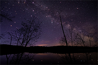
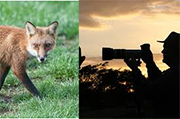
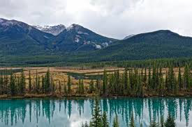
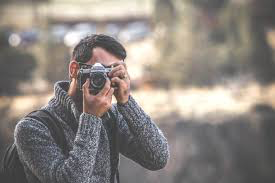
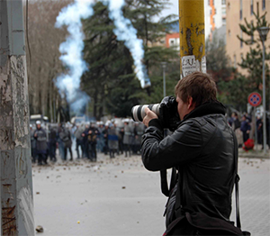

Je vais maintenant vous parler des différents domaines et des différentes pratiques de la photographie. Il va évidement falloir choisir un
objectif en fonction de la photographie que vous voulez réaliser.
Le métier / la passion de photographe, s'exerce dans de nombreux domaines.
La photographie est un art complet regroupant énormément de disciplines; il y a en conséquence beaucoup de spécialités différentes. En voici une liste non exhaustive énonçant les plus connues:
| L'astrophotographie: |
| L'astrophotographie est une discipline de l'astronomie et de la photographie qui consiste à photographier des objets célestes (telles que la lune et les étoiles par exemple). Il est préférable d'avoir des optiques (objectifs) lumineuses afin de capter un maximum de lumière car évidemment l'astrophotographie se pratique de nuit. |
 |
| Les photographies animalières: |
La photographie animalière consiste à prendre des photos d'animaux sauvages dans leurs habitats naturels. Par exemple si vous faites un safari ou si vous partez en forêt (désolé les photos de votre chat ne comptent pas).
En photo animalière des téléobjectifs sont généralement utilisés pour prendre les photos de loin (le but n'étant pas d'effrayer la faune sauvage en vous approchant de votre sujet avec un grand angle). |
 |
| Les photographies de paysages: |
| La prise de vue d'un paysage s'effectue généralement avec des grands angles afin d'avoir une large prise de vue sur le paysage qui nous entoure. Il peut s'agir de paysages urbains, de paysages sauvages... |
 |
| Les portraits photographiques: |
Le portrait met en avant le visage ou le corps dans son ensemble.
Une photo de portrait peut être faite avec des petits téléobjectifs afin de créer un effet de flou en arrière plan en s'éloignant un peu de son sujet. En réalité des objectifs polyvalents sont très bien pour la majorité des situations où vous allez prendre quelqu'un en portrait.
Les téléphones portables sont souvent utilisés pour cet usage. |
 |
| La photographie de presse, journalisme: |
Il s'agit ici du métier de reporter agissant pour une chaine d'information ou d'un indépendant qui vend ses images à la presse écrite ou à une chaîne télévisée par exemple.
paparazzi, reportages, évènements sportifs et/ou automobiles, évènements culturels ou autres, manifestations, scènes de guerre... |
 |
Le tableau ne contient pas d'informations sur les photographies de mariages, les photographies de rue (scènes urbaines), sous-marines, aériennes, culinaires... Voici plus de genres photographiques
ici.